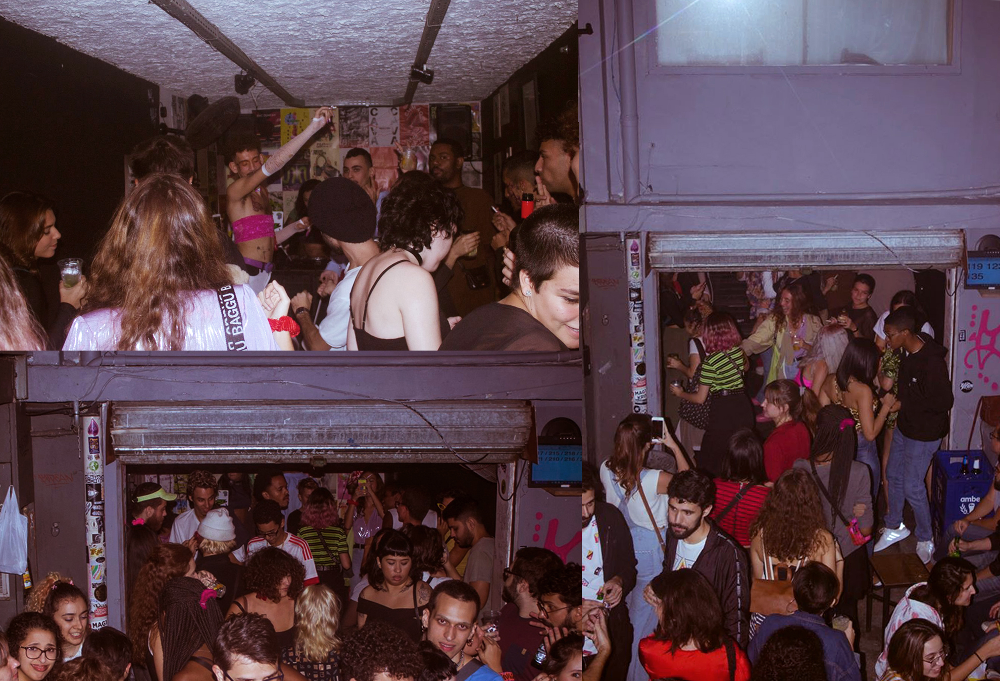
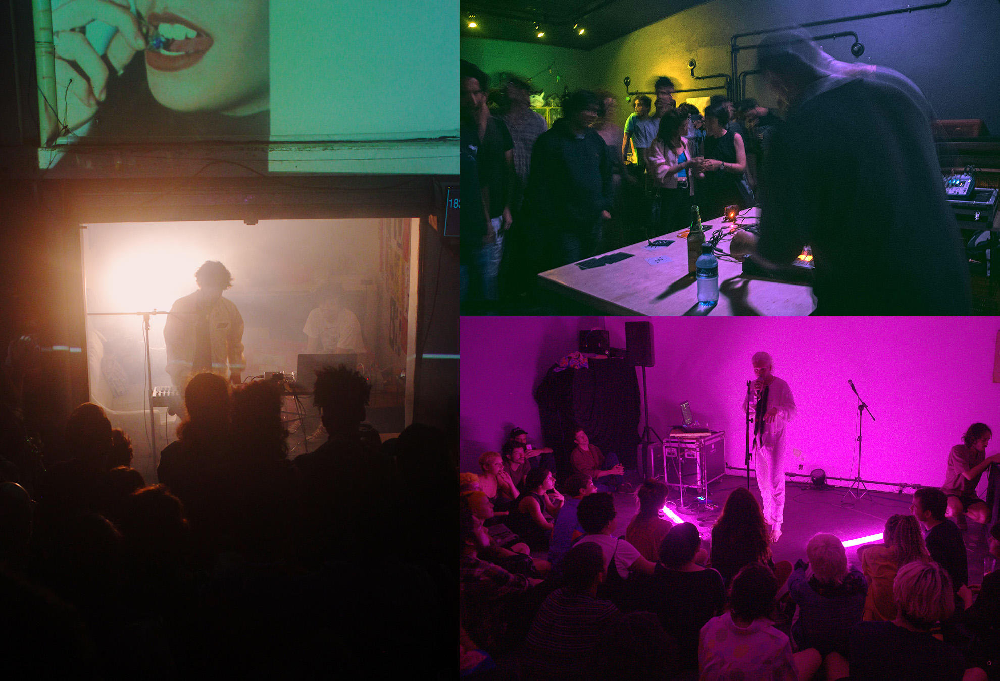

• research, curatorship, strategy
Co-founded and directed the programming of the
space •
Comuna
Created and direct the
platform •
–coro–fundo–
Curate and produce the
event •
–coro–fundo–Festival
Co-directed and co-curated the
exhibition space •
casamata
Produced and co-created the
art book fair •
PÃODEFORMA
Organized, wrote and produced the
exchange program •
Visita

Fotos da festa Lâmina na Cabine e no pátio da casa // Foto: Filipe Braga

Shows realizados em diferentes espaços da casa // Artistas [sentido horário]: Henrique Lugério - Akin (foto: Elisa de Paula) - Azuuuuuuul (foto: Ivan Nishti)

Djs tocando na Cabine da Comuna // Artistas [sentido horário]: Marta Supernova - JF - Brasil Grime Show (foto: AMICHAVY))

Espaços diferentes de convivência da sede da Comuna, em Botafogo.

Cartazes de distintos eventos que compunham a programação da casa // Designers variados

Fachada interna da casa com projeção feita por Helô Duran // Foto: Eduardo Magalhães

Uma das paredes da Comuna com cartazes de eventos variados da rede cultural da cidade